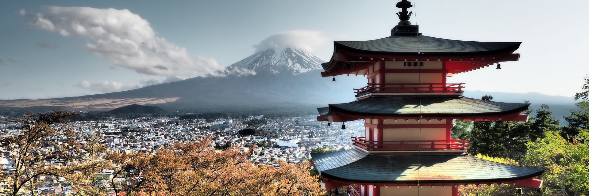
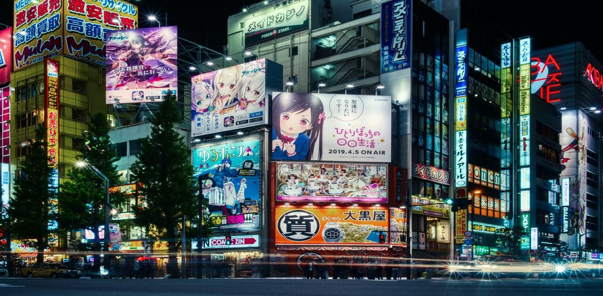
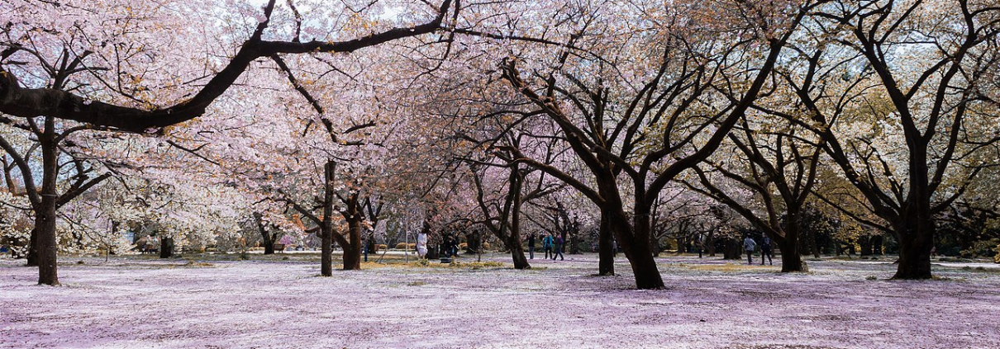
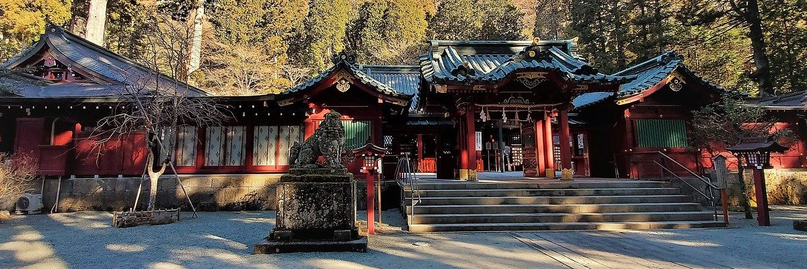
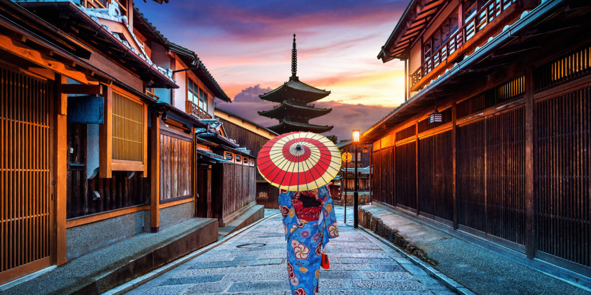
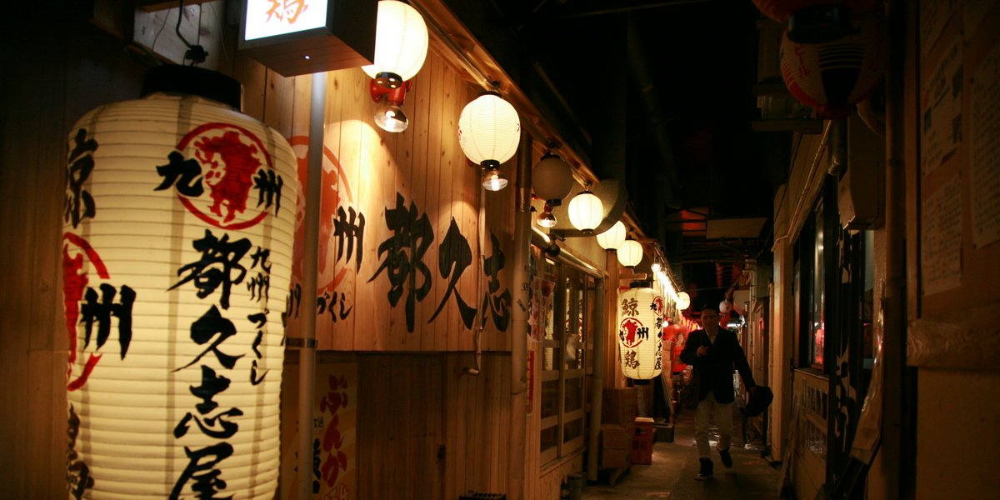
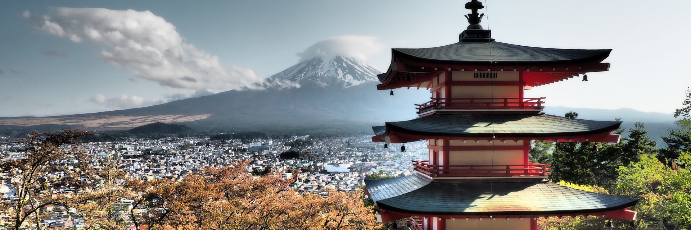
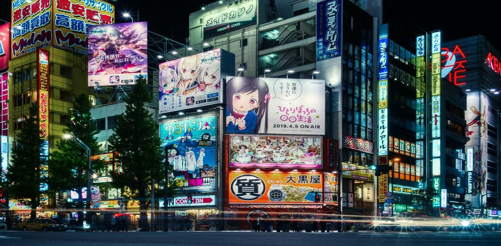
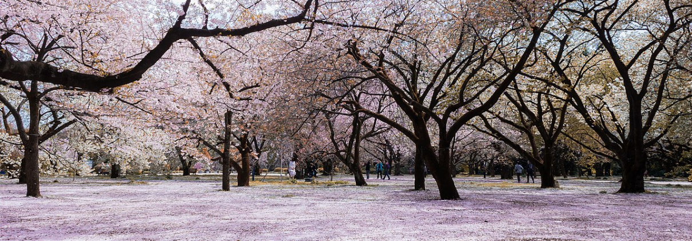
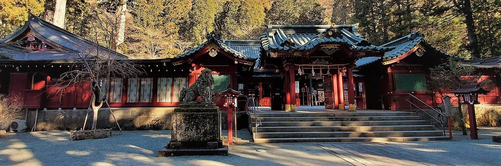
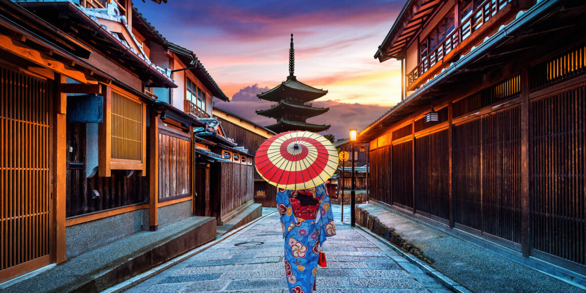
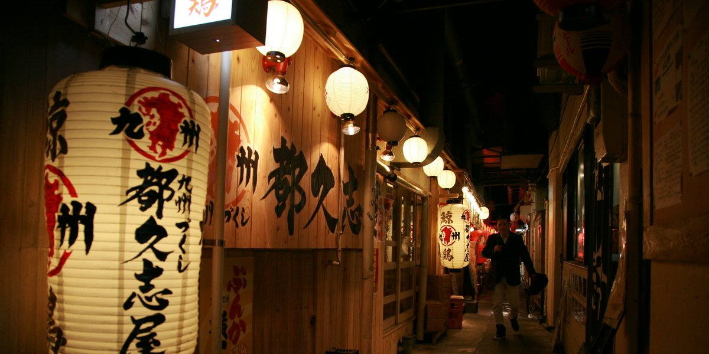
 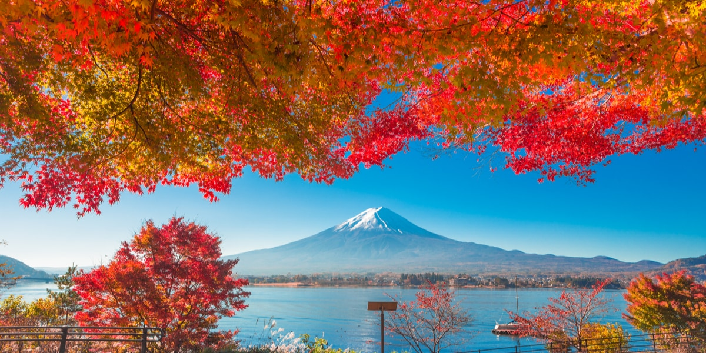
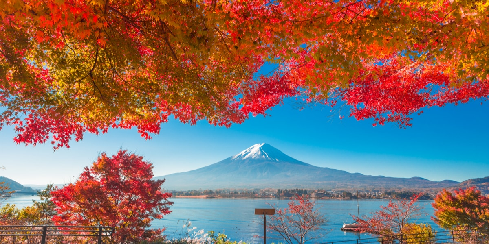

Viaggi e turismo
Informazioni su destinazioni principali, attrazioni turistiche e mezzi di trasporto.
Cultura e tradizioni
Informazioni su festività, cucina giapponese e arte tradizionale.
Storia e patrimonio
Informazioni su periodi storici, siti del patrimonio mondiale, musei e gallerie.
Moda e cultura pop
Informazioni su moda di strada, anime e manga, tecnologia e innovazione.